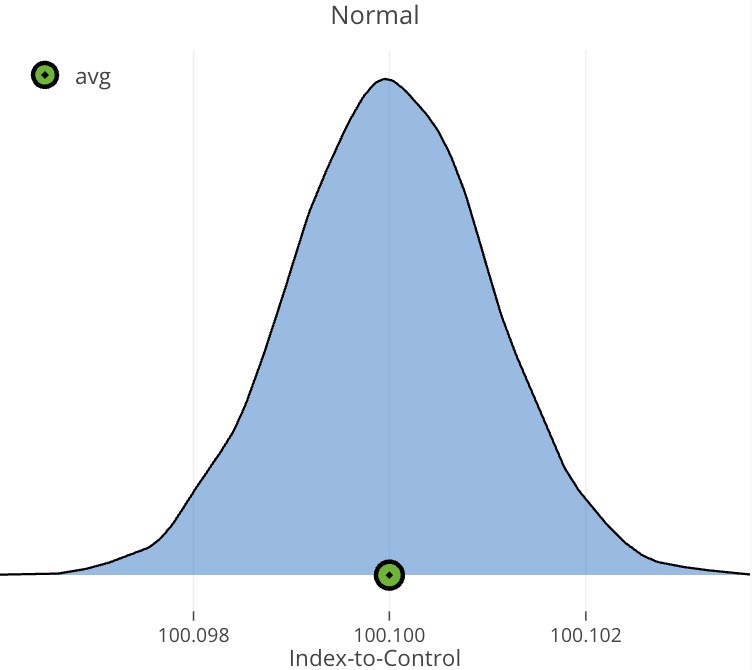
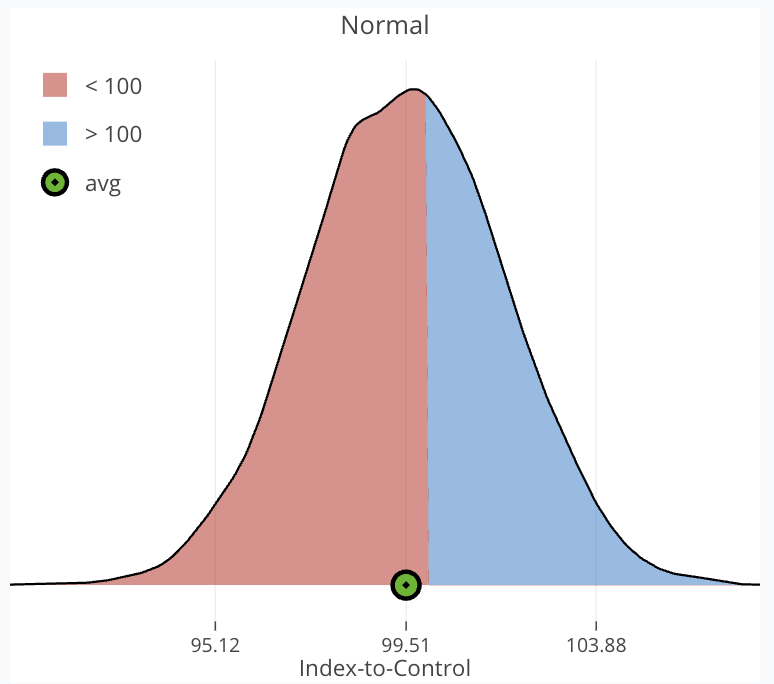

Why Bold Experiments Deliver More Value with Less Traffic
AB Testing
Strategy
Simulation
Compares two strategies — guaranteed small wins vs. a single high-variance transformational bet — using 30,000 A/B test simulations. Big Swings run faster and generate far more average value.
Author
Russ Zaliznyak
Published
August 29, 2025
TL/DR
Smart A/B testing helps to maximize business metrics like conversion, retention, and revenue. But experimenters often face a strategic dilemma:
Play it safe with frequent, incremental wins
Swing big with fewer, riskier tests that could deliver big rewards
This tradeoff is a recurring challenge when traffic is limited and profits need to grow.
This paper compares two distinct strategies:
Guaranteed Small Wins: ten low-risk bets with small, consistent gains
Big Swing: single high-variance transformational bet that could flop — or deliver a breakthrough
Which strategy delivers more value on average?
A/B Test Design
To ground the comparison, I define a base experiment with these parameters:
Min (Test Days)
Max (Test Days)
Max (Test N)
Post Test N
Baseline
Split
7
20
80,000
500,000
65%
50/50
This design reflects a plausible A/B test: short duration with a capped sample, followed by rollout to a larger population.
Strategy Comparison
The distributions below define each strategy. Guaranteed Small Wins are modeled as tightly clustered positive effects just above baseline, while Big Swings reflect a broader spread — with many harmful ideas but occasional breakthroughs that deliver big gains.
Distribution of Guaranteed Small Wins

Effects densely packed around 100.1
Only small positive effects
Distribution of Big Swing

μ = 99.5, σ = 2.25
60% harmful ideas
High upside potential
Simulation Framework
Each distribution in the Strategy Comparison section represents a space of ideas. To evaluate them, I simulate 30,000 A/B tests drawn from each distribution.
Condition A (Control): baseline fixed at 65%, with outcomes fluctuating due to random sampling.
Condition B (Treatment): true conversion rate is shifted by a random draw from the chosen distribution.
Even when the treatment is encoded with lift, stochastic variation can make it underperform the control in a given run. Results are aggregated across simulations to compare average marginal impact.
\[
\text{Expected Loss} = \Pr(\text{harm}) \times \mathbb{E}[\text{Magnitude of Harm}]
\]
We refer to expected loss as Risk, which serves only as the stopping criterion below.
The Risk Threshold = 0.025% was thoughtfully chosen in advance of the experiment as a balanced stopping point given the parameters of this experiment design.
For now the rationale for selection is completely glossed over, but readers are encouraged to ping me for details about its selection. I promise to have a paper on how risk thresholds are selected.
Simulation Evaluation
For each simulation, and each day on or after Min (Test Days):
Compute Risk (expected loss) for both control and treatment conditions.
Compare each condition’s Risk to the Risk Threshold = 0.025%.
Decision rules:
If only one condition breaches the threshold → select it as the winner.
If both breach → choose the condition with the lower risk.
If neither breaches by the end of the test → select the condition with the lowest final risk.
After selecting a winner:
Simulate rolling out the winner to the remaining test population and the post-test population, regardless of whether it was truly best.
Results
All metrics shown are based on 30,000 simulations and represent expected values, i.e., average outcomes aggregated across all simulated experiments — with each simulation drawing a random treatment effect from its distribution.
Metric
One Guaranteed Win Experiment
One Big Swing Experiment
Mean Run-time
N = 59,516 (15 days)
N = 38,713 (10 days)
Projected Mean @ Year-End
65.037% (100.06 ITC)
65.390% (100.60 ITC)
Marginal Events vs No Test
216
2,261
Compared to a Guaranteed Win experiment, the Big Swing strategy shows clear advantages:
Runs ~33% faster on average (10 days vs 15), freeing traffic sooner.
Produces a higher average outcome per experiment (65.39% vs 65.04%), a meaningful gap at scale.
Generates ~2,261 additional conversions vs only 216 on average. Marginal events scale directly from the projected mean difference.
We need just over 10 Guaranteed Wins to average the same effect as one Big Swing.
Home Runs Outweigh Strikeouts
How can a strategy with a 60% strikeout rate still outperform 10 guaranteed wins?
Because when a transformational idea hits, it hits big. Smart experiments cut losses early while allowing strong performers to scale — letting a single home run outweigh several duds.
That’s the asymmetric nature of upside: most variants underperform, but rare wins more than make up the difference. And that’s why one Big Swing can match the impact of 10 small wins, while using only a fraction of the traffic.
A single high-performing variant can easily outweigh multiple duds, justifying the risk.
Conclusion
Big Swing experiments run faster and deliver greater average value. While many attempts miss, rare breakthroughs generate such huge gains that they transform the overall outcome. Strikeouts are common, but home runs change the game — making bold bets a highly efficient strategy when traffic and time are limited.
Recommendation
Prioritize bold bets to capture this speed and upside, but manage them within a balanced portfolio. Transformational experiments create breakthroughs; smaller wins provide stability. Together, this mix keeps experimentation fast and sustainable.
Bold swings drive breakthroughs; balance makes them sustainable.
Acknowledgements
Big THANK YOU to my colleague Joseph Powers, PhD, who introduced me to Quarto and using simulation studies to make my work life easier.
About Me
I work on experimentation systems, Bayesian optimization, and simulation-driven decision-making. My recent work includes Bayesian long-term optimization, informed priors, and CUPED.
If you’re thinking about experimentation strategy, simulation design, or testing frameworks — I’d love to connect. Always happy to trade ideas or dig deeper into what drives meaningful impact.
---title: "The Value of Big Swings"subtitle: "Why Bold Experiments Deliver More Value with Less Traffic"author: "Russ Zaliznyak"date: "2025-08-29"description: > Compares two strategies — guaranteed small wins vs. a single high-variance transformational bet — using 30,000 A/B test simulations. Big Swings run faster and generate far more average value.categories: [AB Testing, Strategy, Simulation]execute: echo: false---# TL/DRSmart A/B testing helps to maximize business metrics like conversion, retention, and revenue. But experimenters often face a strategic dilemma:- **Play it safe** with frequent, incremental wins - **Swing big** with fewer, riskier tests that could deliver big rewards This tradeoff is a recurring challenge when traffic is limited and profits need to grow. This paper compares two distinct strategies:1. **Guaranteed Small Wins**: ten low-risk bets with small, consistent gains 2. **Big Swing**: single high-variance transformational bet that could flop — or deliver a breakthroughWhich strategy delivers more value on average?---# A/B Test DesignTo ground the comparison, I define a base experiment with these parameters:| Min (Test Days) | Max (Test Days) | Max (Test N) | Post Test N | Baseline | Split ||-----------------|-----------------|--------------|-------------|----------|-------|| 7 | 20 | 80,000 | 500,000 | 65% | 50/50 |<br>This design reflects a plausible A/B test: short duration with a capped sample, followed by rollout to a larger population. # Strategy ComparisonThe distributions below define each strategy. Guaranteed Small Wins are modeled as tightly clustered positive effects just above baseline, while Big Swings reflect a broader spread — with many harmful ideas but occasional breakthroughs that deliver big gains.<style>img.framed { border:1pxsolid#ddd;border-radius:8px;padding:6px; }.tile-label { text-align:center;font-weight:600;margin-bottom:6px; }.tile-sub { text-align:center;font-style:italic;font-size:0.9em;margin-bottom:10px; }</style>::: {.columns}::: {.column width="50%"}<div class="tile-label">Distribution of Guaranteed Small Wins</div>{fig-alt="Expected treatment effects, small wins" width="100%" .framed}- Effects densely packed around 100.1 - Only small positive effects:::::: {.column width="50%"}<div class="tile-label">Distribution of Big Swing</div>{fig-alt="Expected treatment effects, transformational" width="100%" .framed}- μ = 99.5, σ = 2.25 - 60% harmful ideas - High upside potential::::::## Simulation FrameworkEach distribution in the *Strategy Comparison* section represents a **space of ideas**. To evaluate them, I simulate 30,000 A/B tests drawn from each distribution.- **Condition A (Control):** baseline fixed at 65%, with outcomes fluctuating due to random sampling. - **Condition B (Treatment):** true conversion rate is shifted by a random draw from the chosen distribution.Even when the treatment is encoded with lift, stochastic variation can make it underperform the control in a given run. Results are aggregated across simulations to compare average marginal impact.::: {columns}::: {.column width="48%"}```{python}#| echo: true#| code-fold: true#| code-summary: "Simulation Example (Control)"from numpy.random import binomialtotal_users =int(8e4)control_users =int(total_users /2)number_days =20control_users_per_day = ( control_users / number_days)control_baseline =0.65control_conversions_by_day = binomial( control_users, control_baseline, number_days,)```:::::: {.column width="48%"}```{python}#| echo: true#| code-fold: true#| code-summary: "Simulation Example (Treatment)"from numpy.random import normaltreatment_users =int(total_users /2)treatment_users_per_day = ( treatment_users / number_days)index_to_control = ( normal(99.5, 2.5, 1) /100)treatment_mean = ( control_baseline * index_to_control)treatment_conversions_by_day = binomial( treatment_users, treatment_mean, number_days,)```::::::## Stopping Threshold**`Expected Loss`** is used as our stopping threshold.$$\text{Expected Loss} = \Pr(\text{harm}) \times \mathbb{E}[\text{Magnitude of Harm}]$$We refer to expected loss as **`Risk`**, which serves only as the stopping criterion below. The **Risk Threshold = 0.025%** was thoughtfully chosen in advance of the experiment as a balanced stopping point given the parameters of this experiment design. For now the rationale for selection is completely glossed over, but readers are encouraged to ping me for details about its selection. I promise to have a paper on how risk thresholds are selected.## Simulation Evaluation1. For each simulation, and each day on or after `Min (Test Days)`: - Compute **Risk (expected loss)** for both control and treatment conditions. - Compare each condition's **Risk** to the **Risk Threshold = 0.025%**.2. Decision rules: - If **only one** condition breaches the threshold → select it as the winner. - If **both** breach → choose the condition with the lower risk. - If **neither** breaches by the end of the test → select the condition with the lowest final risk.3. After selecting a winner: - Simulate rolling out the winner to the remaining test population and the post-test population, regardless of whether it was truly best.## ResultsAll metrics shown are based on 30,000 simulations and represent expected values, i.e., average outcomes aggregated across all simulated experiments --- with each simulation drawing a random treatment effect from its distribution.| Metric | One Guaranteed Win Experiment | One **Big Swing** Experiment ||-------------------------------|-------------------------------|------------------------------|| **Mean Run-time** | N = 59,516 (15 days) | N = 38,713 (10 days) || **Projected Mean @ Year-End** | 65.037% (100.06 ITC) | 65.390% (100.60 ITC) || **Marginal Events vs No Test** | 216 | 2,261 |<br>Compared to a **Guaranteed Win** experiment, the **Big Swing** strategy shows clear advantages:1. Runs ~33% faster on average (10 days vs 15), freeing traffic sooner. 2. Produces a higher average outcome per experiment (65.39% vs 65.04%), a meaningful gap at scale. 3. Generates ~2,261 additional conversions vs only 216 on average. Marginal events scale directly from the projected mean difference. We need just over 10 **Guaranteed Wins** to average the same effect as one **Big Swing**.# Home Runs Outweigh StrikeoutsHow can a strategy with a 60% strikeout rate still outperform 10 guaranteed wins? Because when a transformational idea hits, it hits big. Smart experiments cut losses early while allowing strong performers to scale --- letting a single home run outweigh several duds.That's the asymmetric nature of upside: most variants underperform, but rare wins more than make up the difference. And that's why one Big Swing can match the impact of 10 small wins, while using only a fraction of the traffic. ```{python}#| fig-cap: A single high-performing variant can easily outweigh multiple duds, justifying the risk.import plotly.graph_objects as goitc_values = [97, 98, 99, 99.5, 100.5, 101, 102]conversions = [-274, -200, -250, -390, 1500, 3500, 7300]labels = [str(v) for v in itc_values]colors = ['red'if val <0else'green'for val in conversions]fig = go.Figure(data=[ go.Bar( x=labels, y=conversions, marker_color=colors, text=[f'{val:+}'for val in conversions], textposition='outside' )])fig.update_layout( title="Marginal Events by Index-to-Control (ITC) Value", xaxis_title="ITC Value", yaxis_title="Marginal Events (Conversions)", template='plotly_white', yaxis=dict(zeroline=True, zerolinecolor='black'), bargap=0.3)fig.show()```<br># Conclusion **Big Swing** experiments run faster and deliver greater average value. While many attempts miss, rare breakthroughs generate such huge gains that they transform the overall outcome. Strikeouts are common, but home runs change the game --- making bold bets a highly efficient strategy when traffic and time are limited. # Recommendation Prioritize bold bets to capture this speed and upside, but manage them within a balanced portfolio. Transformational experiments create breakthroughs; smaller wins provide stability. Together, this mix keeps experimentation fast and sustainable.> Bold swings drive breakthroughs; balance makes them sustainable.# AcknowledgementsBig THANK YOU to my colleague Joseph Powers, PhD, who introduced me to Quarto and using simulation studies to make my work life easier.---::: {.callout-note collapse="false" icon="💬" title="<b>About Me</b>"}<div style="font-size: 110%">I work on experimentation systems, Bayesian optimization, and simulation-driven decision-making. My recent work includes Bayesian long-term optimization, informed priors, and CUPED.If you're thinking about experimentation strategy, simulation design, or testing frameworks — I'd love to connect. Always happy to trade ideas or dig deeper into what drives meaningful impact.📩 **Email:** [rzaliznyak@gmail.com](mailto:rzaliznyak@gmail.com)</div>:::